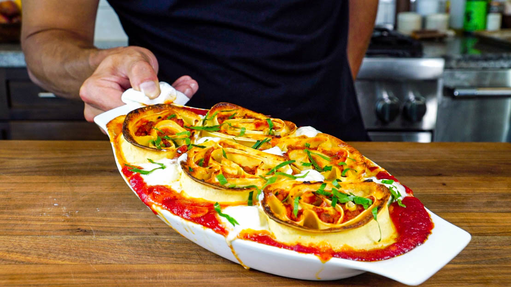

Pinwheel Lasagna

Don Angie's famous Pinwheel Lasagna
This is the recipe for NYC-based Don Angie's Pinwheel Lasagna which could be considered an innovation in lasagna!
Ingredients:
- Northern Style Egg Dough
- 1 + 1/4 Cup of Besciamella Chilled
- 100 g parmigiano Reggiano
- 950 g Italian sausage Bolognese
- 500 g Tomato Sauce
- 450 g Shredded Whole MIlk Mozzarella
- 60 g Marscapone
- 45 ml Extra Virgin Olive Oil
- 8 g of Chopped Parsley
- Salt to taste
Instructions
- Get a large pot of water up to a boil, about 4 quarts.
Once boiling add about a full cup of salt to it.
The pasta will be submerged for a short period of time so it won’t have a lot of time to absorb salt so it's best to over salt the water for this recipe.
You can also set up an ice bath (I tend not to) to dip the pasta sheets in after cooking,
and then have a bowl ready to dry the sheets along with parchment paper to hold the cooked sheets.
- Cook the pasta sheets one at a time, submerge in the water for 15-20 seconds, then remove from the water and either dip in the ice bath or go straight on to the towel
( I find the cool fairly quickly).
Once dry, transfer to the parchment paper and then repeat with the rest of the pasta sheets,
making sure each cooked pasta sheet has a layer of parchment separating them so none stick to each other.
- To assemble the lasagna, place one pasta sheet on the counter the long way (like a portrait) and spread 1/4 cup of the besciamella in a thin layer even across the pasta sheet.
Sprinkle 1/4 cup of parm and 1 cup of the grated mozzarella leaving a 2 inch border of exposed besciamella at the top to “glue” the two sheets together.
Place another pasta sheet onto and spread 1 cup of the bolognese evenly across the sheet but leaving another 2 inch border of besciamella at the top edge to glue the pinwheel closed.
- Then starting at the bottom, tightly roll the pasta into a thick log and then transfer to parchment paper and roll it tight.
Place a sheet tray and repeat with the rest of the pasta dough.
The rolls can be tightly wrapped in plastic at this point and refrigerator for up to 2 days, or frozen for up to 3 months before cooking (Thaw before cooking).
- Preheat the oven to 200 C degrees
- Once ready to cook, take a baking dish and spoon in some tomato sauce on the bottom.
Then get the logs out and use a serrated knife, slice each log in half, and the slice each half in half, yielding 4 pinwheels per log, each about 1 3/4 thick.
- Then arrange the pinwheels into the baking sheet, placing the side of the pinwheel that looks best face up.
Bake until the pasta edges are golden brown, 20-30 minutes.
Remove from the oven, pipe in some the robiolina or Marscapone and then place under the broiler just to warm it up.
Then top with parsley and olive oil and serve immediately.